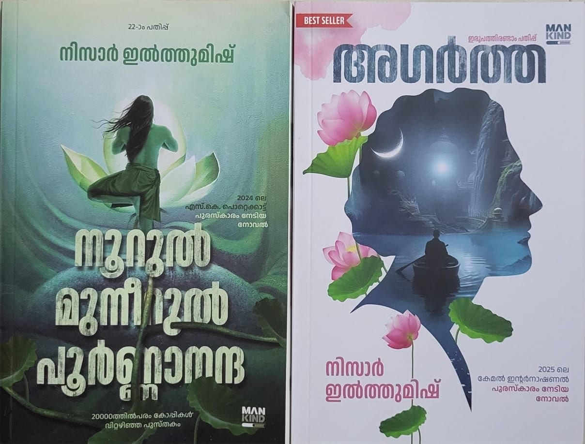

Author: നിസാർ ഇൽത്തുമിഷ്
Review by: ജോർജ് മാത്യു
ഇൽത്തുമിഷ്. ചരിത്ര പാഠങ്ങളിലെവിടെയൊ ആ പേരു കേട്ടതായി ഓർക്കുന്നു. പക്ഷേ നിസാർ ഇൽത്തുമിഷ് രണ്ടു ദിവസം മുമ്പു വരെ അപരിചിതമായിരുന്നു ആ പേര്. KLIBF ൽ അദ്ദേഹം വന്നതും പോയതും അതുകൊണ്ടു തന്നെ അറിയാതെ പോയി. പുതിയ എഴുത്തുകാരും പുസ്തകങ്ങളും ഇപ്പോൾ മിക്കവാറും പരിചിതമാകുന്നത് റീഡേഴ്സ് ഫോറത്തിലൂടെയാണ്. അവിടെ 'അഗർത്ത' യും 'നൂറുൽ മുനീറുൽ പൂർണ്ണാനന്ദ' യും വായിച്ചവർ നിശ്ചയമായും ഉണ്ടാകും. പക്ഷേ ഫോറത്തിൽ പരിചയപ്പെടുത്തിയിട്ടില്ല എന്നു തോന്നുന്നു.
ഷൗക്കത്തിന്റെ പുസ്തകങ്ങൾ ആണ് പ്രധാനമായും തിരഞ്ഞത്. കൊണ്ടു വന്ന പുസ്തകങ്ങൾ എല്ലാം തീർന്നെന്ന വിവരം പുസ്തകം കിട്ടിയില്ലെങ്കിലും സന്തോഷം പകരുന്നു. വായിക്കപ്പെടട്ടെ.
പിന്നെ തിരക്കില്ലാത്ത സ്റ്റാളുകളിൽ വേഗത്തിലും തിരക്കുള്ളയിടങ്ങളിൽ മെല്ലെയും എത്തിനോക്കിയപ്പോൾ Best Seller ആയി കണ്ട പുസ്തകങ്ങളിൽ ചിലതു വാങ്ങി. അതിൽ നിസാർ ഇൽത്തുമിഷിന്റെ 22ാം പതിപ്പിറങ്ങിയ രണ്ടു പുസ്തകങ്ങളും...
വായനയുടെ രാഷ്ടീയത്തെക്കുറിച്ച് ശ്രീ. ബിനോയ് വിശ്വം പറഞ്ഞപ്പോൾ 100 പുസ്തകങ്ങൾ വായിച്ചുണ്ടാകുന്നതിനേക്കാൾ അനുഭവസമ്പത്ത് ഓരോ യാത്രകളിൽ നിന്നും കിട്ടുമെന്ന് പറയുകയുണ്ടായി. 80 കളിൽ ഒരു പാട് ലോക യാത്രകൾ ചെയ്തയാളാണദ്ദേഹം. രാഷ്ട്രീയ പ്രവർത്തനത്തിന്റെ തിരക്കുകൾക്കിടയിൽ അതൊന്നും പകർത്തിവെയ്ക്കാനാകാതെ പോകുന്നു.
ഇവിടെ തന്റെ 17 മത്തെ വയസ്സിൽ എന്തിനെന്നറിയാതെ യാത്ര പുറപ്പെട്ട നിസാർ ഇൽത്തുമിഷ് 40 ലും അത് തുടരുന്നു. ആ അനുഭവങ്ങൾ പുസ്തകങ്ങളായപ്പോൾ ധാരാളമായി വായിക്കപ്പെടുന്നു.
കാശിയിൽ തുടങ്ങി ദാരിദ്ര്യത്തിലും ഊഷ്മളമായ സാമൂഹിക ബന്ധങ്ങളിലും സമ്പന്നമായിരുന്ന കേരളീയ ഭൂതകാലത്തിലൂടെ തിരികെ യാത്ര ചെയ്തു വീണ്ടും കാശിയിൽ തിരിച്ചെത്തിയ നൂറുൽ മുനീറുൽ പൂർണ്ണാനന്ദയുടെ യാത്ര ഒറ്റയിരുപ്പിൽ വായിച്ചു തീർത്തു.(ആ യാത്ര അഗർത്തയിൽ തുടരും.). പുതു തലമുറയ്ക്കു ഒട്ടും പരിചിതമല്ലാത്ത ഒരു ഭൂതകാലമാണ് മുനീറിന്റെ ബാല്യകാലത്തിലൂടെ വിശദമായി ദൃശ്യവത്കരിക്കുന്നത്.
ദൈവമുണ്ടോ ഇല്ലയോ എന്നെനിക്കറിയില്ല; ഇല്ലാതിരിക്കുന്നതാണ് ദൈവത്തിനു നല്ലതെന്ന് ആരോ പറഞ്ഞതായി ശ്രീനിവാസൻ പറഞ്ഞു കേട്ടിട്ടുണ്ട്. പക്ഷേ ഈ നോവൽ ദൈവത്തിൽ പ്രതീക്ഷയർപ്പിച്ചാണ് മുന്നോട്ടു പോകുന്നത്.
നോവലിനേക്കുറിച്ച് കൂടുതലൊന്നും പറയുന്നില്ല. വായിച്ചനുഭവിക്കൂ... ഇൽത്തുമിഷ് ഒരേ സമയം സംഘിയെന്നും സുഡാപ്പിയെന്നുമുള്ള അഭിനന്ദനങ്ങളേറ്റു വാങ്ങി എഴുത്തു തുടരുന്നു.